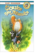

Увлекательные истории о дружбе крохотного, доброго человечка Лешика, живущего в подвале дома семейства Флеров, кота Мурзика, мышки Ванечки, щенка Жека, вороны Карлуши и слепой девочки Настеньки не оставят равнодушным ни одного маленького читателя. Доброта, отзывчивость, чувство юмора - вот главное оружие, которое поможет отважным друзьям преодолеть все преграды, победить злую колдунью Жиролу, спасти народ волшебной страны и даже совершить чудо... Для старшего школьного и младшего школьного возраста.